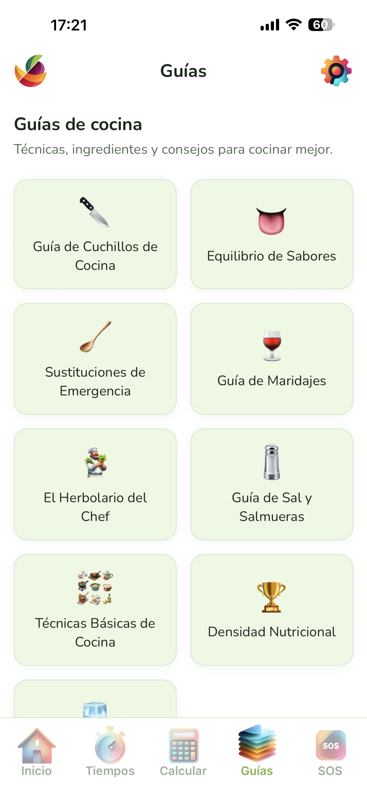

Técnicas básicas, ingredientes de temporada y consejos prácticos explicados de forma clara y directa. Sin recetas paso a paso, sino el conocimiento que te permite improvisar y mejorar en la cocina.
Cortes, métodos de cocción, fondos, salsas base
Qué comprar en cada época del año
Trucos de profesional para el cocinero de casa
Cómo sacar el máximo partido a cada producto
Proporciones de mantequilla, harina y leche, cómo evitar los grumos, y cómo ajustar la densidad según el uso (croquetas, lasaña, gratinado).
Qué es cada corte, para qué platos sirve cada uno y cómo conseguir que todos los trozos queden del mismo tamaño.
Por qué es importante, a qué temperatura, cuánto tiempo por lado y cómo evitar que suelte agua en lugar de dorarse.
El punto exacto de cebolla pochada, cómo añadir el ajo sin que se queme, y cuándo incorporar el tomate. La base de media cocina española.
Desde el huevo pasado por agua hasta el escalfado, la tortilla francesa y el huevo frito perfecto. Tiempos y trucos para cada preparación.
Cocinar con productos de temporada es más barato, más sostenible y, sobre todo, más sabroso. La guía de temporada te indica qué frutas y verduras están en su mejor momento cada mes.
Disponible para iPhone y Android. Sin anuncios, sin suscripciones.